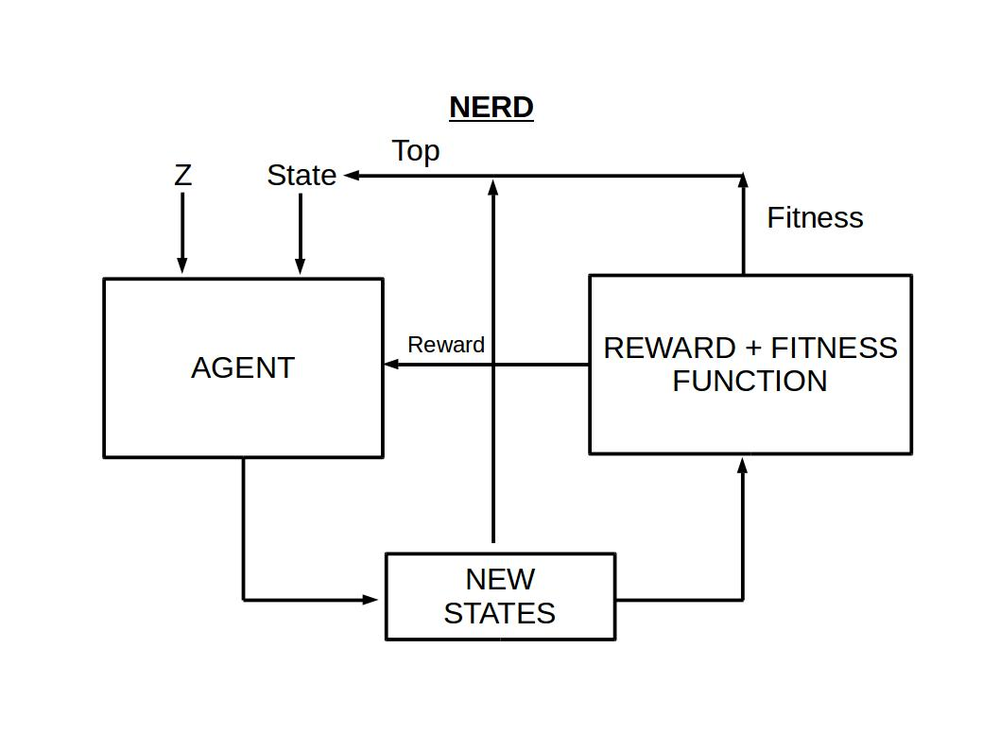

NERD
Evolution of Discrete data with Reinforcement Learning.
If you are visiting here for the first time then I would recommend you to read my earlier project DrugAI before going any further. I am reusing many ideas and functions that I have used in DrugAI particularly from wGAN. In DrugAI project I have used SMILES (Simplified Molecular Input Line Entry System) for generating and classifying drug like molecules. In simple terms SMILES are ASCII strings representing a struture of chemical molecule. For example methane(CH4) in SMILES would be written as "C" without quotes and ethane (C2H6) as "CC".
NERD is the acronym for Neural Experimenting Rl algorithm for Discrete data (just wanted a cool name for the project). NERD has ideas taken from Genetic Algorithm and Reinforcement Learning and combined it. You can think NERD of as a chef, musician, scientist etc. who experiments with his/her ingredients, music notes or materials to create novel cuisines or music or objects. In this project the aim of NERD was to evolve chemical molecules from scratch which are in the SMILES format. I dont know if any one else has already discovered such an algorithm and hoping I am not reinventing the wheel. The below image shows how NERD algorithm works.
NERD Algorithm
NERD has two important parts, an agent which is used for Reinforcement Learning and Reward-Fitness Function (RFF) which outputs reward and fitness for a given SMILES molecule. Both of these parts have neural network models at its core
Reward-Fitness Funtion
RFF at the center consists of a convolution 1D classification neural network. RFF's classification model and the RL Agent have similar neural network architecture except the inputs and outputs. The output of RFF consists of a discrete reward value as well as a continous fitness scores. The reward value is used for training the RL agent whereas the fitness score is used for selecting the best SMILES for next step. The reward for a particlar SMILES struture is determined by three things.
- Whether classified SMILES is real or fake.
- Whether the parent SMILES is same as the child SMILES.
- Whether the generated sequence is in SMILES format.
In my current project, RFF's neural network is trained for 200 epochs. We have used real and fake SMILES data to train this neural network. The current accuracy of RFF's model is near 50-60 ish percentage.Not a good metrics but chose this model for my lack of computational power. We will use this model as a starting function for creating reward and fitness score.
Reinforcement Learning Agent
For NERD I have used a vanilla actor-critic model as an RL agent. There is no other reasons for choosing actor-critic model except being easier to code in pytorch and gives some what stable results. I have followed the similar coding paradigm as that of the official pytorch actor-critic implementation. The main difference in NERD's actor-critic model and official pytorch's actor critic model is the inputs and outputs. There are two inputs in NERD one for the state and an another for z vector. z vector is random numbers from normal distribution. I tried training NERD without z vector but the sequence generated lack variety. The outputs for offical pytorch implementaion have two heads a policy head and a value head whereas NERD have two policy head and a single value head. The two policy heads in NERD's agent have to make two separate decisions.
- First Policy: What to do?
- Second Policy: Where to do it?
RESULT
Sequence
The RL agent training has been carried out in google colab. The results are not incredible but encouraging. When the training started the output looked something like this.
Epoch: 0 Reward: -1000.0 Loss: -4931.022rC#1)+S6B4[))|||||||||||||||||||||||||||||||||... -10.0 -0.821050
rC#1)+S6B4[))|||||||||||||||||||||||||||||||||... -10.0 -0.900526
rC#1)+S6B4[))|||||||||||||||||||||||||||||||||... -10.0 -0.956724
format = [SMILES , Reward,Fitness]
Even after training for ten thousand epochs the algorithm was not able to create a valid SMILES but the end result looks interesting. Even though its not SMILES sequence, we can see its starting to learn and understand it.
Epoch: 10000 Reward: -1000.0 Loss: -0.73CCBCCCBCBCC|C||||CC|||||||||||||||||||||||||||... -10.0 -0.501915
CCBCCCBCBCC|C||||CC|||||||||||||||||||||||||||... -10.0 -0.502028
CCBCCCBCBCC|C||||CC|||||||||||||||||||||||||||... -10.0 -0.502080
Ignoring the coding/implementaion error the other most likely reasons the algorithm was unsuccessful in generating SMILES sequence is because it may require additonal training time or of the subpar accuracy of RFF model. Training a model to create a sequence from scratch takes lots of computation and thats why I think it is much more suitable for refinig an already existing sequence with this algorithm. This way we can create new sequence from the pre existing sequences.
Images
Update: 2 DEC 2019

Projects page https://github.com/Gananath/NERD